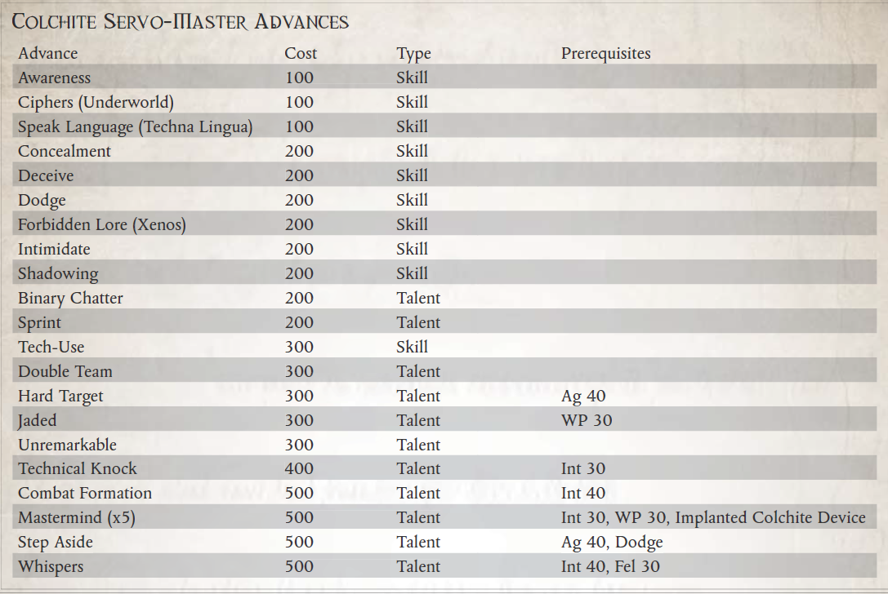

“有些人天生就是领导者，能够使他人屈服于自己的意志，或者带领他们取得超人的技能和耐力的非凡壮举；对别人来说，总是有仆人的。”
——归因于塞巴斯蒂安·温特斯卡尔
在人类广阔疆域的前沿，生命是廉价的，但劳动力却是溢价的。如果没有广阔的蜂巢世界来提供源源不断的人力资源，那么毫无疑问的仆从劳动在科罗努斯广域内比在帝国本身更有价值。机仆在科罗努斯广域很常见，从简单的无人机在 Rogue Traders 的船只上移动，到搬运货物的劳工单位，再到战斗机仆除了基本的智力之外无法思考或做出反应，这使得它们对探险者的使用有些有限边境。
一些聪明的——有些人会说是愚蠢的——已经找到了绕过这些限制的方法，那些负担得起并且是邪恶的斯特里克西斯的人。这些奇特的人利用他们自己的品种，他们在大桶中种植并交易出价最高的人。除了他们的肉体之外，斯特里西斯人还创造了（或者更可能是拾荒或偷来的）一种用思想控制仆从的方法。只需付出一定的代价，探索者就可以在他的小脑底部植入一个名为“Colchite”的心理大脑激励装置，该装置提供了与经过特殊修改以包含相同异形装置的仆从的简单思维的链接。通过直接控制机仆的行动，几乎任何有足够头脑的人都可以将这些原本简单笨拙的无人机变成自己的虚拟延伸。
尽管许多战士会嘲笑躲在仆人身后并让肉体机器人为他们战斗的想法，但在浩瀚宇宙中还有其他人对这个想法有很大的好处。只要冷交易继续下去，Stryxis 技术就会有现成的市场。
尽管帝国法令禁止使用异种技术，但广域中有许多人很容易绕过这些法律，甚至公开炫耀它们。尽管与 Stryxis 打交道是一种棘手且经常令人沮丧的经历，但他们是这种奇异技术的唯一提供者。确切地说，Stryxis 商家对这项技术的付款要求各不相同，但在 Stryxis 的典型情况下，它永远不会像简单的 Thrones 支付那样简单。
虽然 Stryxis 可以提供必要的植入物，也可以提供现成的仆从和大桶兽（当然要额外付费），但它们实际上无法将心理激励器植入角色中。这需要具有高级医学知识的整形外科医生或其他个人。通常，植入物唯一可见的外部迹象是颅底的小疤痕。
所需职业：任何
替代等级：3 或更高 (10,000 xp)
要求：智力 35，WP 30
其他要求：探索者可能没有不可触碰的特质。探索者必须直接从 Stryxis 贸易商或其他适当的市场（它们被认为非常稀有）获得一个“Colchite”植入物，再加上他希望装备的每个仆从一个，然后进行手术以将设备放置到位。他还必须拥有至少一个可以以这种方式结合的仆从（参见 ROGUE TRADER 核心规则手册第 374-375 页了解各种仆从配置文件或本卷第 108 页了解通灵魔宠的规则，这也可用于生成类似仆从的生物）。
好处：探索者获得策划者特质。
特殊：Stryxis使用的奇怪异种技术具有特殊的残留效果。在极少数情况下，装备了这种技术的机仆在暴露到埃尔达面前时会失控。任何拥有这种植入物的仆从都会获得收益仇恨（灵族）天赋。

主脑（特质）先决条件：智力 30，WP 30，植入的 Colchite 装置
在他的小脑底部植入了 Stryxis 精神激励器，这个角色可以控制特定的仆从，就好像它们是他自己身体的延伸一样。当主动控制时，机仆使用探索者的 WS 和 BS，并且可以执行可能超出其正常心理能力的更复杂的动作（例如，战斗机仆可以打开一扇门，或者无人机可以捡起一个精致的物体而不破坏它，例如）。
探索者每次获得该天赋时可以控制一名仆从，但仅限于每 10 点智力特性（向上取整）控制一名仆从，最多可控制 5 名仆从。例如，一个智力为 36 的角色一次只能控制 3 个仆从，即使他第四次获得该天赋。
控制范围扩大了 20m x 角色的意志力加成（因此 WP 23 的角色可以控制他的仆从最远 40m）；如果仆从超出最大控制范围或精神链接被破坏（例如由于不可触碰的存在），仆从将恢复其正常程序。只有安装了与角色协调的科尔奇特植入物的仆从才能被控制。
在主动控制一个或多个仆从时，角色必须全神贯注，并且每个回合只能进行半动作。如果角色停止集中注意力或注意力被打断，仆从们只会恢复他们的正常生活，并按照给他们的最后指示